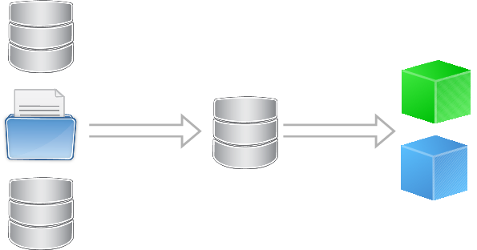

Cubes
SQL Server Analysis Services
The Plan
Business Intelligence
Business intelligence (BI) is the set of techniques and tools for the transformation of raw data into meaningful and useful information for business analysis purposes. BI technologies are capable of handling large amounts of unstructured data to help identify, develop and otherwise create new strategic business opportunities. The goal of BI is to allow for the easy interpretation of these large volumes of data. Identifying new opportunities and implementing an effective strategy based on insights can provide businesses with a competitive market advantage and long-term stability.
-- wikipedia
"We need business intelligence!"
-- Some Dimensional Employee

Transforming data into useful information.
SSAS Can Help
When to use SSAS
- Need to aggregate numbers
- Need to aggregated by dimensions
- Each additional dimension makes aggregation grow exponentially
When NOT to use SSAS
- Adhoc reporting
SSAS Process
Cubes!
Cube? What's a Cube?
- Like a server side pivot table.
- Works on billions / millions of records
Building Cubes
- Unit of Measure: Fact Table
- Transform Data into Star Schema / Snow Flake (Scrubbing)
Let's Build Something
ASTOF-vSQL50D
Employee Example